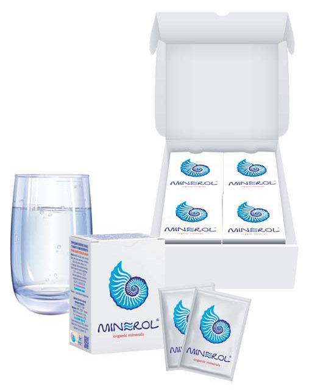
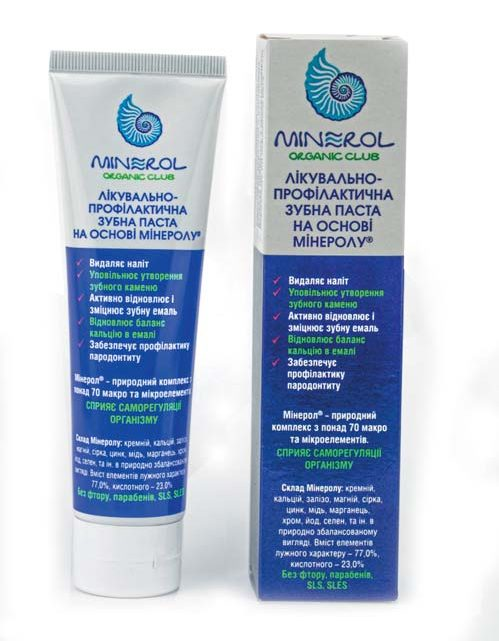

Профілактика · журнал «ДентАрт» 2022 №4
Профілактика і відновлення здоров'я ротової порожнини природним мінеральним комплексом «Мінерол»
Prevention and restoration of oral health with the natural mineral complex «Minerol»
Матеріал відображає особистий досвід і погляди авторки та є передруком статті з журналу «ДентАрт» (2022, №4). Він має інформаційно-ознайомчий характер і не замінює консультації лікаря та професійного стоматологічного лікування.
Хвороби ротової порожнини — це водночас і сигнал про хронічні хвороби організму, і їх причина. Стан нашого тіла безпосередньо пов'язаний зі здоров'ям ротової порожнини, а воно значною мірою залежить від харчування та забезпеченості організму мінеральними елементами.
Дещо з особистого досвіду
Проблема ротової порожнини особисто мене торкнулася після народження двійнят, коли мені було 27 років. Продовжуючи годувати їх грудьми практично до року, я помітила появу зубного каменю (тепер знаю, що це залежить від стану мінерального обміну), підвищену чутливість до хімічних і температурних впливів і навіть запалення кісткової тканини щелепи. Результатом стала потреба в постійному пломбуванні зубів.
Понад 30 років я і мої близькі вживаємо природну речовину під торговою маркою «Мінерол» щодня всередину і періодично робимо мінеральне обгортання — «Мінеролотерапію» — для забезпечення організму мінеральними елементами. З моєї ініціативи в Європейському інституті природничо-наукових досліджень та дистанційного навчання (м. Дрезден, Німеччина) було відкрито кафедру сучасної дієтології, де ці знання покладено в основу освітнього процесу. Понад 20 років тому було запатентовано «Спосіб лікування пародонтозу» з використанням «Мінеролу», розроблений за участю відомих стоматологів України — Арнольда Яновича Вареса та Василя Анатолійовича Нагурного.


Природний мінеральний комплекс «Мінерол» та зубна паста на його основі.
Експериментальні дослідження ефективності комплексу «Мінерол»
Сировинною основою для «Мінеролу» є природна субстанція (монтморилоніт) з глибини 70–80 метрів (дно стародавнього моря), що містить понад 70 елементів, зокрема близько 25 % кремнію. За даними досліджень, проведених в Інституті стоматології та щелепно-лицьової хірургії НАМН України (м. Одеса), вивчали, зокрема:
- Гепатопротекторну ефективність. Профілактичне застосування комплексу «Мінерол» у щурів із хронічним холестазом знижувало запальні процеси в печінці, коригувало метаболічні порушення та поліпшувало стан антиоксидантно-прооксидантної системи й антитоксичної функції печінки.
- Карієспрофілактичну ефективність. Експериментальні дослідження встановили високу профілактичну дію щодо запобігання розвитку каріозного процесу та порушенню мінералізуючої функції пульпи зубів тварин у карієсогенних умовах. Лікувально-профілактичний захід у дітей 6–7 років із карієсом зубів дозволив загальмувати каріозний процес.
Практика застосування «Мінеролу» в стоматології
За досвідом авторки, «Мінерол» застосовують у кількох стоматологічних ситуаціях:
- Після видалення зубів — полоскання ротової порожнини 3–4 рази на день розчином 1 ч. л. «Мінеролу» на склянку води кімнатної температури; такий самий розчин з теплою водою вживають усередину 2–3 рази на день за півгодини до їди.
- Після встановлення імплантів — полоскання та вживання всередину; перед імплантацією важливо визначити мінеральну щільність кісткової тканини (остеоденситометрія).
- При запальних процесах у ротовій порожнині — мінеральні компреси або таблетки безпосередньо на зону запалення.
- При використанні знімних протезів і появі мозолів на піднебінні — на ніч притиснути таблетку язиком до піднебіння до повного розсмоктування.
- Щоденне застосування (полоскання, всередину та мінеральна паста) сприяє відновленню pH ротової порожнини та кращому засвоєнню їжі.
Дати організму те, що потрібне, і забрати непотрібне
Хвороби рота багато в чому залежать саме від харчування. Патогенна мікрофлора, що міститься в ураженій карієсом ротовій порожнині, може поширитися на органи шлунково-кишкового тракту, спричинивши запальний процес. Ризик розвитку виразкової хвороби зростає за наявності зубного нальоту: саме на зубному камені накопичуються колонії бактерій Helicobacter pylori. Крім того, коли зуби пошкоджені, вони не можуть обробити їжу до стану, достатнього для її засвоєння, і органи ШКТ відчувають додаткове навантаження.
Відсутність потрібних елементів у сучасних продуктах, і особливо дефіцит клітковини, часто взагалі не враховується як причина захворювань ротової порожнини. Дієти, багаті на природні джерела клітковини (овочі, зелень, горіхи, цілісні зерна), давали нашим предкам більшу різноманітність кишкових бактерій, ніж маємо ми зараз. Сьогодні середній американець з'їдає лише близько 15 грамів клітковини на день — тоді як наші предки з'їдали до 100 грамів. Можливість керування здоров'ям через харчування підтверджується й епігенетичними механізмами: негативні зміни у стані здоров'я можуть бути оборотними, якщо дати організму те, що потрібне, і забрати непотрібне.
Висновки
Щоб повернути здоров'я, варто перебудувати свою дієту, дізнатися, що корисне для здоров'я, а що ні. Авторка переконана, що залучення до стоматологічного процесу сучасної дієтології, у тому числі з використанням «Мінеролу» та зубної пасти на його основі, може стати корисним доповненням до професійного лікування й профілактики захворювань ротової порожнини.
Література
- Стивен Лин. Челюсти. Научное исследование о взаимосвязи между зубами, мозгом и кишечником. Москва: Эксмо, 2020. — 271 с.
- Борисенко Л. Н., Батечко С. А. Минерол в программе эндоэкологической реабилитации человека. Киев: Червона Рута, 2006. — 287 с.
- Кудрин А. В., Скальный А. В., Жаворонков А. А., Скальная М. Г., Громова О. А. Иммунофармакология микроэлементов. Москва: КМК, 2000. — 537 с.
- Деньга О. В., Макаренко О. А., Борисенко Л. Н., Горохівський В. В. Гепатопротекторна ефективність Мінеролу у комплексі з препаратом Леквін у щурів із хронічним холестазом.
- Деньга О. В., Макаренко О. А., Борисенко Л. М., Горохівський В. В. Карієспрофілактична ефективність «Мінеролу» // ДентАрт. — 2022. — № 3. — С. 67–70.
- Борисенко Л. М., Варес А. Я., Нагурний В. А. Спосіб лікування пародонтозу (Патент України № UA 54906-A), 2002 р.